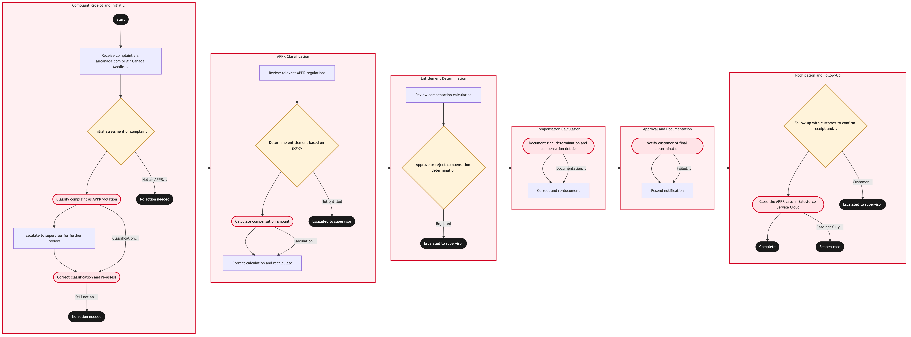

Updated 2026-08-18
APPR Entitlement Determination and Compensation
Air Canada determines whether a disrupted passenger is owed compensation under the Air Passenger Protection Regulations, based on the disruption reason code, the length of delay at arrival and the carrier size band. The determination is assembled by hand from the PNR, the operational record and the flight's coded delay reason, then keyed into the Salesforce case as a reasoned decision.
Air Canada contextThis is the highest-exposure customer process in the estate. The CTA complaint backlog runs to roughly 92,500 files, the Agency issued a CA$426,000 administrative monetary penalty in March 2026 for 71 violations of APPR section 18(1.1), and Air Canada opened a third-party arbitration pilot covering an initial 500 cases. Entitlement is calculated manually from the PNR plus the disruption reason and then re-keyed into the case tool. That re-key is the single most defensible automation target in the customer estate, provided the adjudicator remains the decision-maker of record.
Process flow
Click to zoom

Process steps
▼
Phase 1 — Intake and eligibility screening
4 steps
| Step | Activity | Role | System | Input | Output | KPI | Dec | Exc | Pain point |
|---|---|---|---|---|---|---|---|---|---|
| 1.1 | Receive and register claim | Customer Relations Agent | Salesforce Service CloudA | Web form, call transcript or CTA referral | Registered case with claim reference | Case registered within 2 business days of receipt | N | N | Claims arrive across four channels in inconsistent formats and are registered by hand |
| 1.2 | Verify passenger and booking identity | Customer Relations Agent | Amadeus Altea Customer ManagementA | Claimed booking reference and passenger name | Verified PNR linked to the case | Identity verified on first attempt above 90 percent | N | N | Agents work two screens because the PNR does not surface inside the case record |
| 1.3 | Retrieve operating flight record | Customer Relations Agent | Amadeus Altea Customer ManagementA | Flight number and date of travel | Actual departure and arrival times with delay duration | Flight record retrieved within 10 minutes of case open | N | N | Express operator flights need a separate lookup outside the mainline record |
| 1.4 | Screen claim eligibility window | Customer Relations Agent | Salesforce Service CloudA | Travel date and claim submission date | Eligible or time-barred flag on the case | Zero eligible claims incorrectly time-barred | Y | N | Manual date arithmetic against a one-year filing limit invites error |
▼
Phase 2 — Entitlement determination
5 steps
| Step | Activity | Role | System | Input | Output | KPI | Dec | Exc | Pain point |
|---|---|---|---|---|---|---|---|---|---|
| 2.1 | Obtain coded disruption reason | Ops Data Analyst | NetLine/OpsB | Flight leg and operational log | Delay reason code with controllable classification | Reason code obtained for 100 percent of adjudicated claims | N | N | Reason codes are coded for operational reporting, not for regulatory defensibility |
| 2.2 | Classify controllable, controllable-for-safety or outside control | APPR Adjudicator | Salesforce Service CloudA | Coded reason and supporting operational narrative | Regulatory disruption category on the case | Category upheld on CTA review above 85 percent | Y | N | The safety carve-out is the most contested judgement and is applied inconsistently between adjudicators |
| 2.3 | Calculate delay at arrival and compensation band | APPR Adjudicator | Salesforce Service CloudA | Scheduled and actual arrival times | Compensation band of 400, 700 or 1000 Canadian dollars | Calculation error rate below 2 percent | N | N | Band calculation is performed by hand from two timestamps and re-keyed into the case |
| 2.4 | Assess standard-of-treatment and rebooking obligations | APPR Adjudicator | Amadeus Passenger RecoveryA | Rebooking record and care provided at station | Treatment obligation assessment | Treatment obligations evidenced on 100 percent of upheld claims | N | N | Meals, hotel and rebooking evidence sits in station records the adjudicator cannot query directly |
| 2.5 | Escalate contested or high-value determination | Customer Relations Team Lead | Salesforce Service CloudA | Draft determination above the delegation threshold | Reviewed determination or legal referral | Escalations resolved within 10 business days | N | Y | Escalation queues are the largest single contributor to cycle time |
▼
Phase 3 — Settlement and regulatory closure
3 steps
| Step | Activity | Role | System | Input | Output | KPI | Dec | Exc | Pain point |
|---|---|---|---|---|---|---|---|---|---|
| 3.1 | Issue determination and reasons to the passenger | Customer Relations Agent | Salesforce Service CloudA | Approved determination | Bilingual written decision with reasons | Decision issued within the 30-day regulatory response window | N | N | English and French parity on reasons is maintained manually |
| 3.2 | Process compensation disbursement | Finance Disbursement Analyst | SAP S/4HANAA | Approved compensation amount and payee details | Payment issued and posted to the ledger | Payment issued within 30 days of a favourable determination | N | N | Disbursement is a separate hand-off with no status visible back in the case |
| 3.3 | Respond to CTA and close the regulatory file | APPR Adjudicator | CTA Complaint InterfaceA | Complete case file with determination and evidence | Regulatory response filed and case closed | Binding decisions answered inside the 90-day CTA service standard | N | N | Assembling the evidence bundle for the Agency is manual and repeats work already done in the case |
Swim lanes
Customer Relations Agent1.1 1.2 1.3 1.4 3.1
Ops Data Analyst2.1
APPR Adjudicator2.2 2.3 2.4 3.3
Customer Relations Team Lead2.5
Finance Disbursement Analyst3.2
Systems touched
Salesforce Service CloudAAmadeus Altea Customer ManagementANetLine/OpsBAmadeus Passenger RecoveryASAP S/4HANAACTA Complaint InterfaceAAmazon ConnectAaircanada.comA
Key performance indicators
- Complaint cycle time from registration to determination under 30 days
- Determination upheld on CTA review above 85 percent
- Compensation disbursed within 30 days of a favourable determination
- Cases answered inside the 90-day binding decision standard at 100 percent
- Reason-code completeness on adjudicated claims at 100 percent
Risks and control points
- Administrative monetary penalties where reason codes are absent, late or inconsistent with the operational record, as in the March 2026 penalty for 71 section 18 violations
- Adjudicator-to-adjudicator variance on the controllable-for-safety carve-out creating inconsistent outcomes on materially identical facts
- Backlog growth outrunning adjudication capacity and pushing cases into arbitration
- Manual re-key between the PNR, the operational record and the case tool introducing calculation error into a regulated determination
- English and French parity failures on issued reasons creating a separate Official Languages exposure
Air Canada Process Wiki — process and systems reference compiled from public sources
for IT Application Management and User Support pre-sales discovery.
Built 2026-08-20. Every system carries an evidence tier: tier C is an industry pattern and tier U is an open
question, and neither should be asserted as fact about Air Canada without confirmation in discovery.
Not affiliated with or endorsed by Air Canada. Air Canada, Aeroplan and Altitude are trademarks of Air Canada.